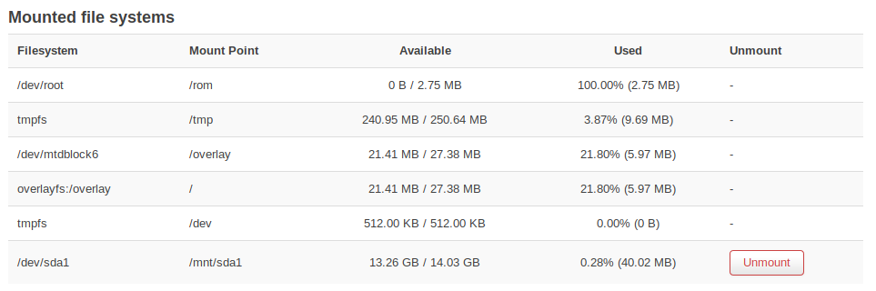

- 登录终端
ssh root@192.168.1.1
添加汉语支持
apt install luci-i18n-base-zh-cn
添加usb设备
先不要插入usb，使用ssh root@192.168.1.1登录终端，下载安装一些软件包
opkg update && opkg install block-mount e2fsprogs kmod-fs-ext4 kmod-usb-storage kmod-usb2 kmod-usb3 |
通过 ls -al /dev/sd* 命令查看所有usb设备的名字。例如会有/dev/sda, /dev/sdb, …
插入usb，再次运行 ls -al /dev/sd* ，这次你会看到一个新的设备名字 /dev/sdXX,这个就是你的usb设备
格式化不是必选项,你可以直接跳过格式化，直接挂载。如果你的usb设备是sda
|
cd /mnt/sda 就进入USB设备目录了
浏览器登录路由器后，你就可以看到已经挂载的usb了

Reference